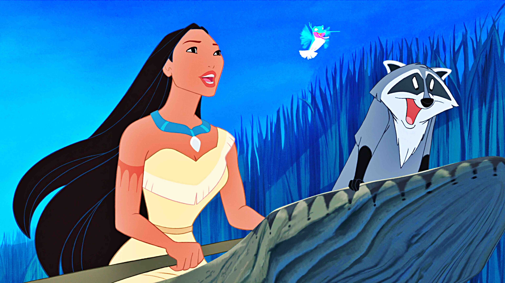

About Pocahontas
Pocahontas loves doing stuff outdoors and has adventures with her animal friends
Pocahontas and her friends
Pocahonta's characteristics
- She's got long black hair
- She's treated as animal-lover
- She's trying to preserve her culture
Pocahonta's Friends
Pocahontas has some awesome friends. I think her best friend is Meeko the racoon. He's really smart. Click on the links below to see her friends: